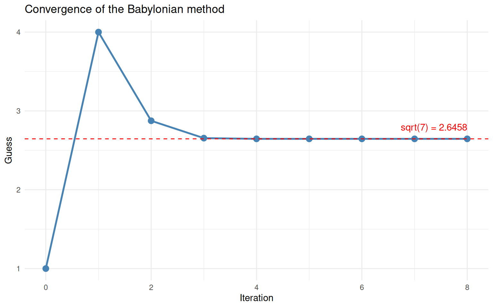
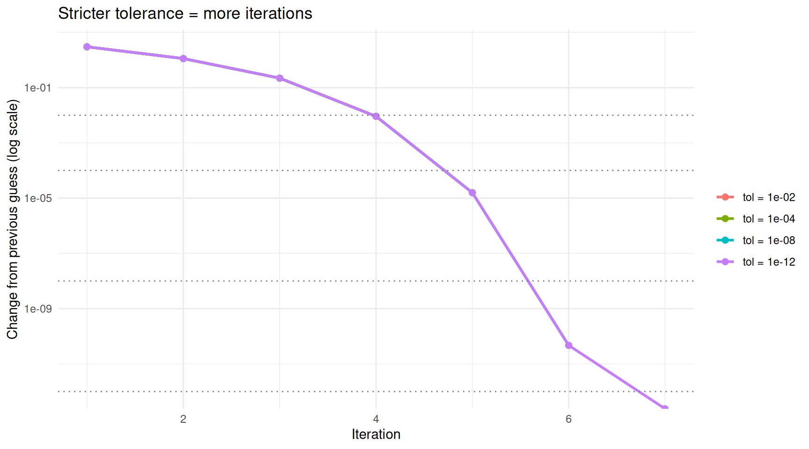

Last updated: 2026-03-23
Checks: 7 0
Knit directory: muse/
This reproducible R Markdown analysis was created with workflowr (version 1.7.2). The Checks tab describes the reproducibility checks that were applied when the results were created. The Past versions tab lists the development history.
Great! Since the R Markdown file has been committed to the Git repository, you know the exact version of the code that produced these results.
Great job! The global environment was empty. Objects defined in the global environment can affect the analysis in your R Markdown file in unknown ways. For reproduciblity it’s best to always run the code in an empty environment.
The command set.seed(20200712) was run prior to running
the code in the R Markdown file. Setting a seed ensures that any results
that rely on randomness, e.g. subsampling or permutations, are
reproducible.
Great job! Recording the operating system, R version, and package versions is critical for reproducibility.
Nice! There were no cached chunks for this analysis, so you can be confident that you successfully produced the results during this run.
Great job! Using relative paths to the files within your workflowr project makes it easier to run your code on other machines.
Great! You are using Git for version control. Tracking code development and connecting the code version to the results is critical for reproducibility.
The results in this page were generated with repository version 7d29dc4. See the Past versions tab to see a history of the changes made to the R Markdown and HTML files.
Note that you need to be careful to ensure that all relevant files for
the analysis have been committed to Git prior to generating the results
(you can use wflow_publish or
wflow_git_commit). workflowr only checks the R Markdown
file, but you know if there are other scripts or data files that it
depends on. Below is the status of the Git repository when the results
were generated:
Ignored files:
Ignored: .Rproj.user/
Ignored: data/1M_neurons_filtered_gene_bc_matrices_h5.h5
Ignored: data/293t/
Ignored: data/293t_3t3_filtered_gene_bc_matrices.tar.gz
Ignored: data/293t_filtered_gene_bc_matrices.tar.gz
Ignored: data/5k_Human_Donor1_PBMC_3p_gem-x_5k_Human_Donor1_PBMC_3p_gem-x_count_sample_filtered_feature_bc_matrix.h5
Ignored: data/5k_Human_Donor2_PBMC_3p_gem-x_5k_Human_Donor2_PBMC_3p_gem-x_count_sample_filtered_feature_bc_matrix.h5
Ignored: data/5k_Human_Donor3_PBMC_3p_gem-x_5k_Human_Donor3_PBMC_3p_gem-x_count_sample_filtered_feature_bc_matrix.h5
Ignored: data/5k_Human_Donor4_PBMC_3p_gem-x_5k_Human_Donor4_PBMC_3p_gem-x_count_sample_filtered_feature_bc_matrix.h5
Ignored: data/97516b79-8d08-46a6-b329-5d0a25b0be98.h5ad
Ignored: data/Parent_SC3v3_Human_Glioblastoma_filtered_feature_bc_matrix.tar.gz
Ignored: data/brain_counts/
Ignored: data/cl.obo
Ignored: data/cl.owl
Ignored: data/jurkat/
Ignored: data/jurkat:293t_50:50_filtered_gene_bc_matrices.tar.gz
Ignored: data/jurkat_293t/
Ignored: data/jurkat_filtered_gene_bc_matrices.tar.gz
Ignored: data/pbmc20k/
Ignored: data/pbmc20k_seurat/
Ignored: data/pbmc3k.csv
Ignored: data/pbmc3k.csv.gz
Ignored: data/pbmc3k.h5ad
Ignored: data/pbmc3k/
Ignored: data/pbmc3k_bpcells_mat/
Ignored: data/pbmc3k_export.mtx
Ignored: data/pbmc3k_matrix.mtx
Ignored: data/pbmc3k_seurat.rds
Ignored: data/pbmc4k_filtered_gene_bc_matrices.tar.gz
Ignored: data/pbmc_1k_v3_filtered_feature_bc_matrix.h5
Ignored: data/pbmc_1k_v3_raw_feature_bc_matrix.h5
Ignored: data/refdata-gex-GRCh38-2020-A.tar.gz
Ignored: data/seurat_1m_neuron.rds
Ignored: data/t_3k_filtered_gene_bc_matrices.tar.gz
Ignored: r_packages_4.5.2/
Untracked files:
Untracked: .claude/
Untracked: CLAUDE.md
Untracked: analysis/.claude/
Untracked: analysis/aucc.Rmd
Untracked: analysis/bimodal.Rmd
Untracked: analysis/bioc.Rmd
Untracked: analysis/bioc_scrnaseq.Rmd
Untracked: analysis/chick_weight.Rmd
Untracked: analysis/likelihood.Rmd
Untracked: analysis/modelling.Rmd
Untracked: analysis/wordpress_readability.Rmd
Untracked: bpcells_matrix/
Untracked: data/Caenorhabditis_elegans.WBcel235.113.gtf.gz
Untracked: data/GCF_043380555.1-RS_2024_12_gene_ontology.gaf.gz
Untracked: data/SeuratObj.rds
Untracked: data/arab.rds
Untracked: data/astronomicalunit.csv
Untracked: data/davetang039sblog.WordPress.2026-02-12.xml
Untracked: data/femaleMiceWeights.csv
Untracked: data/lung_bcell.rds
Untracked: m3/
Untracked: women.json
Unstaged changes:
Modified: analysis/isoform_switch_analyzer.Rmd
Modified: analysis/linear_models.Rmd
Note that any generated files, e.g. HTML, png, CSS, etc., are not included in this status report because it is ok for generated content to have uncommitted changes.
These are the previous versions of the repository in which changes were
made to the R Markdown (analysis/algorithm.Rmd) and HTML
(docs/algorithm.html) files. If you’ve configured a remote
Git repository (see ?wflow_git_remote), click on the
hyperlinks in the table below to view the files as they were in that
past version.
| File | Version | Author | Date | Message |
|---|---|---|---|---|
| Rmd | 7d29dc4 | Dave Tang | 2026-03-23 | What is an algorithm? |
library(ggplot2)An algorithm is a set of step-by-step instructions for solving a problem. That definition covers everything from a recipe for making toast to the code that recommends your next video. But in statistics and data science, the word “algorithm” almost always means something more specific: a procedure that repeats a simple operation over and over until it arrives at an answer.
This article introduces the idea using a concrete example that requires nothing more than basic arithmetic: computing square roots by hand.
What is \(\sqrt{7}\)? You know the answer is somewhere between 2 and 3 (because \(2^2 = 4\) and \(3^2 = 9\)). But how would you find the precise value without a calculator’s square root button?
One approach: guess and improve. This is the Babylonian method (also known as Heron’s method), one of the oldest known algorithms, dating back roughly 4,000 years. The rule is:
That is the entire algorithm. Let’s see why the update rule works.
Suppose you are looking for \(\sqrt{x}\) and your current guess \(g\) is too large. Then \(g > \sqrt{x}\), which means \(\frac{x}{g} < \sqrt{x}\). In other words, \(g\) overshoots and \(\frac{x}{g}\) undershoots. Averaging them lands you closer to the true answer.
The same logic works if \(g\) is too small: then \(\frac{x}{g}\) is too large, and their average is still closer. No matter which side you start on, the average pulls you toward the answer.
Let’s trace through the algorithm by hand, starting with the deliberately rough guess \(g = 1\).
x <- 7
g <- 1
for (i in 1:6) {
g_new <- (g + x / g) / 2
error <- abs(g_new^2 - x)
cat(sprintf(
"Iteration %d: guess = %.10f guess² = %.10f error = %.2e\n",
i, g_new, g_new^2, error
))
g <- g_new
}Iteration 1: guess = 4.0000000000 guess² = 16.0000000000 error = 9.00e+00
Iteration 2: guess = 2.8750000000 guess² = 8.2656250000 error = 1.27e+00
Iteration 3: guess = 2.6548913043 guess² = 7.0484478379 error = 4.84e-02
Iteration 4: guess = 2.6457670442 guess² = 7.0000832521 error = 8.33e-05
Iteration 5: guess = 2.6457513111 guess² = 7.0000000002 error = 2.48e-10
Iteration 6: guess = 2.6457513111 guess² = 7.0000000000 error = 8.88e-16cat(sprintf("\nR's built-in sqrt(7) = %.10f\n", sqrt(7)))
R's built-in sqrt(7) = 2.6457513111Even starting from 1 — a terrible guess — the algorithm reaches 10-digit accuracy within a handful of iterations. Each step roughly doubles the number of correct digits, which is why it converges so quickly.
Convergence means that the sequence of guesses settles down to a fixed value. After enough iterations, the new guess is essentially identical to the old one — the algorithm has nothing left to improve.
We can visualise this by plotting the guess at each iteration.
x <- 7
g <- 1
max_iter <- 8
history <- data.frame(iteration = 0, guess = g)
for (i in seq_len(max_iter)) {
g <- (g + x / g) / 2
history <- rbind(history, data.frame(iteration = i, guess = g))
}
ggplot(history, aes(x = iteration, y = guess)) +
geom_line(linewidth = 1, colour = "steelblue") +
geom_point(size = 3, colour = "steelblue") +
geom_hline(yintercept = sqrt(7), linetype = "dashed", colour = "red") +
annotate("text", x = max_iter, y = sqrt(7) + 0.15,
label = paste0("sqrt(7) = ", round(sqrt(7), 4)),
hjust = 1, colour = "red") +
labs(x = "Iteration", y = "Guess",
title = "Convergence of the Babylonian method") +
theme_minimal()
The guess converges rapidly to the true square root of 7.
The guess drops sharply at first, then flattens out as it reaches the true value (dashed red line). This “steep drop then plateau” shape is characteristic of convergence and you will see it in many iterative algorithms.
An algorithm that runs forever is not very useful. We need a stopping rule — a way to decide that the current guess is good enough.
The most common approach is to define a tolerance: a small number \(\varepsilon\) (say \(10^{-8}\)). At each iteration, you check whether the change from the previous guess is smaller than \(\varepsilon\). If so, you stop.
sqrt_babylonian <- function(x, guess = x / 2, tol = 1e-8, max_iter = 100) {
history <- data.frame(
iteration = 0,
guess = guess,
change = NA_real_
)
for (i in seq_len(max_iter)) {
guess_new <- (guess + x / guess) / 2
change <- abs(guess_new - guess)
history <- rbind(history, data.frame(
iteration = i, guess = guess_new, change = change
))
if (change < tol) {
cat(sprintf("Converged at iteration %d (change = %.2e < tol = %.2e)\n",
i, change, tol))
return(list(result = guess_new, history = history))
}
guess <- guess_new
}
warning("Did not converge within max_iter iterations")
list(result = guess, history = history)
}Let’s test it on several numbers.
for (val in c(2, 50, 1000, 0.03)) {
out <- sqrt_babylonian(val)
cat(sprintf(" sqrt(%.2f) = %.10f (R says %.10f)\n\n", val, out$result, sqrt(val)))
}Converged at iteration 5 (change = 1.59e-12 < tol = 1.00e-08)
sqrt(2.00) = 1.4142135624 (R says 1.4142135624)
Converged at iteration 7 (change = 8.88e-16 < tol = 1.00e-08)
sqrt(50.00) = 7.0710678119 (R says 7.0710678119)
Converged at iteration 9 (change = 5.22e-13 < tol = 1.00e-08)
sqrt(1000.00) = 31.6227766017 (R says 31.6227766017)
Converged at iteration 8 (change = 7.71e-11 < tol = 1.00e-08)
sqrt(0.03) = 0.1732050808 (R says 0.1732050808)The algorithm converges in very few iterations regardless of the
input, and the results match R’s built-in sqrt()
function.
A stricter (smaller) tolerance means more iterations but a more precise answer. Let’s see the trade-off.
x <- 7
tolerances <- c(1e-2, 1e-4, 1e-8, 1e-12)
results <- do.call(rbind, lapply(tolerances, function(tol) {
out <- sqrt_babylonian(x, guess = 1, tol = tol)
h <- out$history
h$tolerance <- paste0("tol = ", format(tol, scientific = TRUE))
h
}))Converged at iteration 4 (change = 9.12e-03 < tol = 1.00e-02)
Converged at iteration 5 (change = 1.57e-05 < tol = 1.00e-04)
Converged at iteration 6 (change = 4.68e-11 < tol = 1.00e-08)
Converged at iteration 7 (change = 0.00e+00 < tol = 1.00e-12)# Remove iteration 0 for the change plot
results_change <- results[!is.na(results$change), ]
ggplot(results_change, aes(x = iteration, y = change, colour = tolerance)) +
geom_line(linewidth = 1) +
geom_point(size = 2) +
geom_hline(yintercept = tolerances, linetype = "dotted", colour = "grey50") +
scale_y_log10() +
labs(x = "Iteration", y = "Change from previous guess (log scale)",
colour = "",
title = "Stricter tolerance = more iterations") +
theme_minimal()Warning in scale_y_log10(): log-10 transformation introduced infinite values.
log-10 transformation introduced infinite values.
Stricter tolerances require more iterations but produce more accurate results.
On the log scale, the change drops in a nearly straight line — this reflects the rapid convergence of this particular algorithm. The dotted horizontal lines show each tolerance threshold. The algorithm stops as soon as the change dips below its threshold.
Every iterative algorithm shares the same skeleton:
1. Start with an initial guess
2. Repeat:
a. Compute a new, improved guess using some update rule
b. Check a stopping condition
c. If satisfied, stop; otherwise, go back to 2a
3. Return the final guessWhat changes between algorithms is the update rule and the stopping condition. The Babylonian method uses the averaging rule \(g_{\text{new}} = \frac{1}{2}(g + x/g)\). Other algorithms use different rules — for instance, gradient descent subtracts a fraction of the slope, and the EM algorithm alternates between estimating hidden variables and updating parameters — but the overall structure is identical.
Let’s make this concrete by writing a general-purpose iterative solver and plugging in different update rules.
iterate <- function(update_fn, guess, tol = 1e-8, max_iter = 100) {
for (i in seq_len(max_iter)) {
guess_new <- update_fn(guess)
if (abs(guess_new - guess) < tol) {
return(list(result = guess_new, iterations = i))
}
guess <- guess_new
}
warning("Did not converge")
list(result = guess, iterations = max_iter)
}Now we can solve different problems by swapping the update function.
# Square root of 7 (Babylonian method)
out1 <- iterate(update_fn = function(g) (g + 7 / g) / 2, guess = 1)
cat(sprintf("sqrt(7) = %.10f (%d iterations)\n", out1$result, out1$iterations))sqrt(7) = 2.6457513111 (6 iterations)# Cube root of 27 (Newton's method for x^3 = 27)
# Update: g_new = g - (g^3 - 27) / (3 * g^2) = (2*g + 27/g^2) / 3
out2 <- iterate(update_fn = function(g) (2 * g + 27 / g^2) / 3, guess = 1)
cat(sprintf("cbrt(27) = %.10f (%d iterations)\n", out2$result, out2$iterations))cbrt(27) = 3.0000000000 (9 iterations)# Golden ratio: the fixed point of f(x) = 1 + 1/x
out3 <- iterate(update_fn = function(g) 1 + 1 / g, guess = 1)
cat(sprintf("Golden ratio = %.10f (%d iterations)\n", out3$result, out3$iterations))Golden ratio = 1.6180339902 (21 iterations)cat(sprintf("\nFor reference: (1 + sqrt(5)) / 2 = %.10f\n", (1 + sqrt(5)) / 2))
For reference: (1 + sqrt(5)) / 2 = 1.6180339887The same three-line loop solved three completely different problems. The only thing that changed was the update rule.
Iterative algorithms do not always behave nicely. Here are two things to watch out for.
Some update rules only work if the starting guess is reasonable. For the Babylonian method this is not a concern (any positive guess works), but other algorithms can diverge or oscillate if started in the wrong place.
# Newton's method for finding the root of x^3 - 2x + 2 = 0
# Update: g_new = g - (g^3 - 2g + 2) / (3g^2 - 2)
# Starting near g = 0 is problematic because the derivative is near zero
newton_cubic <- function(g) {
f <- g^3 - 2 * g + 2
f_prime <- 3 * g^2 - 2
g - f / f_prime
}
# Good start
out_good <- iterate(newton_cubic, guess = -2)
cat(sprintf("From guess = -2: root = %.6f (%d iterations)\n",
out_good$result, out_good$iterations))From guess = -2: root = -1.769292 (5 iterations)# Show what happens near g = 0 (derivative close to 0 causes large jumps)
g <- 0.5
cat("\nFrom guess = 0.5, first few iterations:\n")
From guess = 0.5, first few iterations:for (i in 1:8) {
g_new <- newton_cubic(g)
cat(sprintf(" Iteration %d: guess = %12.4f\n", i, g_new))
g <- g_new
} Iteration 1: guess = 1.4000
Iteration 2: guess = 0.8990
Iteration 3: guess = -1.2888
Iteration 4: guess = -2.1058
Iteration 5: guess = -1.8292
Iteration 6: guess = -1.7717
Iteration 7: guess = -1.7693
Iteration 8: guess = -1.7693When the derivative is near zero, Newton’s method takes enormous steps and can bounce around wildly before (if ever) settling down. This is why good initialisation matters.
Sometimes the update rule sends the guess on a loop that never
settles. The max_iter safeguard prevents infinite loops,
but it means you should always check whether the algorithm actually
converged rather than just ran out of patience.
| Concept | What it means |
|---|---|
| Algorithm | A step-by-step procedure for solving a problem |
| Iterative algorithm | An algorithm that repeatedly improves a guess using an update rule |
| Update rule | The formula that produces a new guess from the current one |
| Convergence | The guesses settle down to a stable value |
| Tolerance | A threshold for “close enough” — the algorithm stops when the change between iterations falls below this |
| Initialisation | The starting guess; some algorithms are sensitive to it, others are not |
The key takeaway: many problems in statistics and data science are solved by algorithms that start with a guess, improve it, and repeat until convergence. The Babylonian method is the simplest example, but the same pattern shows up in linear regression (iteratively reweighted least squares), clustering (k-means), mixture models (EM algorithm), and neural network training (gradient descent). Once you are comfortable with the guess-improve-repeat loop, these more advanced methods are easier to understand because the skeleton is always the same.
sessionInfo()R version 4.5.2 (2025-10-31)
Platform: x86_64-pc-linux-gnu
Running under: Ubuntu 24.04.4 LTS
Matrix products: default
BLAS: /usr/lib/x86_64-linux-gnu/openblas-pthread/libblas.so.3
LAPACK: /usr/lib/x86_64-linux-gnu/openblas-pthread/libopenblasp-r0.3.26.so; LAPACK version 3.12.0
locale:
[1] LC_CTYPE=en_US.UTF-8 LC_NUMERIC=C
[3] LC_TIME=en_US.UTF-8 LC_COLLATE=en_US.UTF-8
[5] LC_MONETARY=en_US.UTF-8 LC_MESSAGES=en_US.UTF-8
[7] LC_PAPER=en_US.UTF-8 LC_NAME=C
[9] LC_ADDRESS=C LC_TELEPHONE=C
[11] LC_MEASUREMENT=en_US.UTF-8 LC_IDENTIFICATION=C
time zone: Etc/UTC
tzcode source: system (glibc)
attached base packages:
[1] stats graphics grDevices utils datasets methods base
other attached packages:
[1] ggplot2_4.0.2 workflowr_1.7.2
loaded via a namespace (and not attached):
[1] gtable_0.3.6 jsonlite_2.0.0 dplyr_1.2.0 compiler_4.5.2
[5] promises_1.5.0 tidyselect_1.2.1 Rcpp_1.1.1 stringr_1.6.0
[9] git2r_0.36.2 callr_3.7.6 later_1.4.7 jquerylib_0.1.4
[13] scales_1.4.0 yaml_2.3.12 fastmap_1.2.0 R6_2.6.1
[17] labeling_0.4.3 generics_0.1.4 knitr_1.51 tibble_3.3.1
[21] rprojroot_2.1.1 RColorBrewer_1.1-3 bslib_0.10.0 pillar_1.11.1
[25] rlang_1.1.7 cachem_1.1.0 stringi_1.8.7 httpuv_1.6.16
[29] xfun_0.56 S7_0.2.1 getPass_0.2-4 fs_1.6.6
[33] sass_0.4.10 otel_0.2.0 cli_3.6.5 withr_3.0.2
[37] magrittr_2.0.4 ps_1.9.1 digest_0.6.39 grid_4.5.2
[41] processx_3.8.6 rstudioapi_0.18.0 lifecycle_1.0.5 vctrs_0.7.1
[45] evaluate_1.0.5 glue_1.8.0 farver_2.1.2 whisker_0.4.1
[49] rmarkdown_2.30 httr_1.4.8 tools_4.5.2 pkgconfig_2.0.3
[53] htmltools_0.5.9
sessionInfo()R version 4.5.2 (2025-10-31)
Platform: x86_64-pc-linux-gnu
Running under: Ubuntu 24.04.4 LTS
Matrix products: default
BLAS: /usr/lib/x86_64-linux-gnu/openblas-pthread/libblas.so.3
LAPACK: /usr/lib/x86_64-linux-gnu/openblas-pthread/libopenblasp-r0.3.26.so; LAPACK version 3.12.0
locale:
[1] LC_CTYPE=en_US.UTF-8 LC_NUMERIC=C
[3] LC_TIME=en_US.UTF-8 LC_COLLATE=en_US.UTF-8
[5] LC_MONETARY=en_US.UTF-8 LC_MESSAGES=en_US.UTF-8
[7] LC_PAPER=en_US.UTF-8 LC_NAME=C
[9] LC_ADDRESS=C LC_TELEPHONE=C
[11] LC_MEASUREMENT=en_US.UTF-8 LC_IDENTIFICATION=C
time zone: Etc/UTC
tzcode source: system (glibc)
attached base packages:
[1] stats graphics grDevices utils datasets methods base
other attached packages:
[1] ggplot2_4.0.2 workflowr_1.7.2
loaded via a namespace (and not attached):
[1] gtable_0.3.6 jsonlite_2.0.0 dplyr_1.2.0 compiler_4.5.2
[5] promises_1.5.0 tidyselect_1.2.1 Rcpp_1.1.1 stringr_1.6.0
[9] git2r_0.36.2 callr_3.7.6 later_1.4.7 jquerylib_0.1.4
[13] scales_1.4.0 yaml_2.3.12 fastmap_1.2.0 R6_2.6.1
[17] labeling_0.4.3 generics_0.1.4 knitr_1.51 tibble_3.3.1
[21] rprojroot_2.1.1 RColorBrewer_1.1-3 bslib_0.10.0 pillar_1.11.1
[25] rlang_1.1.7 cachem_1.1.0 stringi_1.8.7 httpuv_1.6.16
[29] xfun_0.56 S7_0.2.1 getPass_0.2-4 fs_1.6.6
[33] sass_0.4.10 otel_0.2.0 cli_3.6.5 withr_3.0.2
[37] magrittr_2.0.4 ps_1.9.1 digest_0.6.39 grid_4.5.2
[41] processx_3.8.6 rstudioapi_0.18.0 lifecycle_1.0.5 vctrs_0.7.1
[45] evaluate_1.0.5 glue_1.8.0 farver_2.1.2 whisker_0.4.1
[49] rmarkdown_2.30 httr_1.4.8 tools_4.5.2 pkgconfig_2.0.3
[53] htmltools_0.5.9